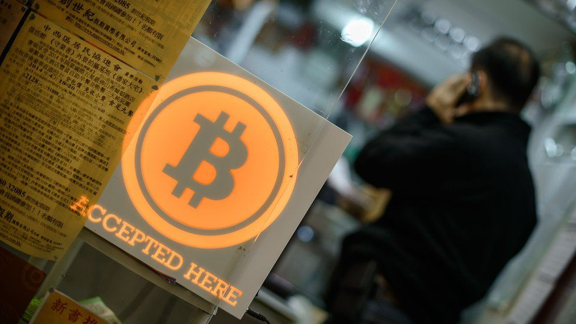
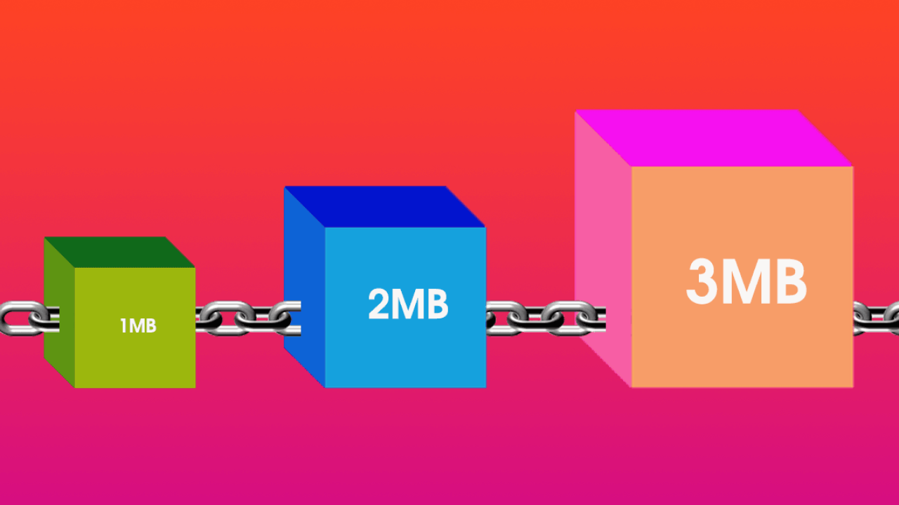
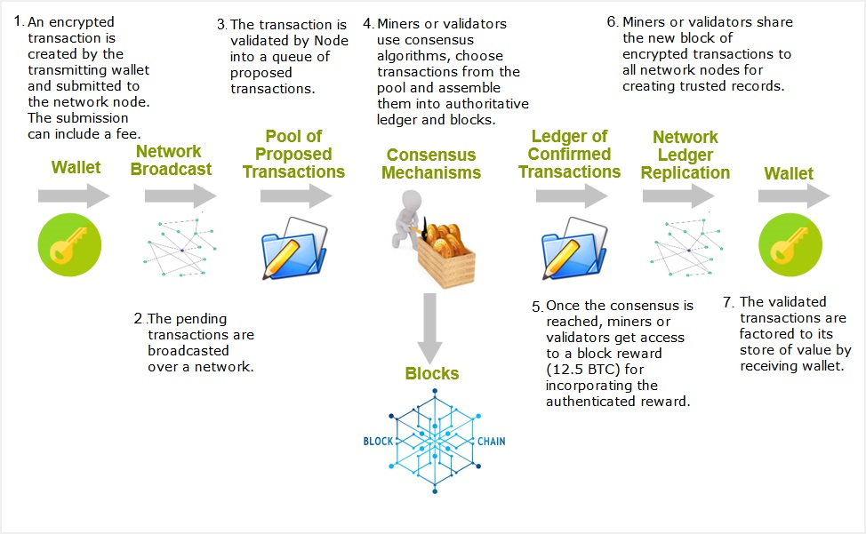

Blockchain
Just imagine... History
The first decentralized blockchain was conceptualized by a person (or group of people) known as Satoshi Nakamoto in 2008. The identity of Satoshi Nakamoto remains unknown to date.
In August 2014, the bitcoin blockchain file size, containing records of all transactions that have occurred on the network, reached 20 GB (gigabytes). In January 2015, the size had grown to almost 30 GB, and from January 2016 to January 2017, the bitcoin blockchain grew from 50 GB to 100 GB in size. The ledger size had exceeded 200 GB by early 2020. 
What is blockchain?
A blockchain is a growing list of records, called blocks, that are linked together using cryptography.
According to Bitcoin the blockchain acts as a universal record of every Bitcoin transaction ever made. The blockchain is a ledger, or log, of those transactions and users on the network collaborate to verify new transactions when they occur. They're rewarded financially for this effort - an enterprise known as "Bitcoin mining".

Blocks hold batches of valid transactions that are hashed and encoded into a Merkle tree. Each block includes the cryptographic hash of the prior block in the blockchain.
main consepts:
- genesis block
- history score
- orphan block
Block time
The block time is the average time it takes for the network to generate one extra block in the blockchain.
Usage
Blockchain technology can be integrated into multiple areas. The primary use of blockchains is as a distributed ledger for cryptocurrencies such as bitcoin
Other spheres:
- Financial services
- Games
- Energy trading
- Supply chain
- Votes
- Certificates and degrees issued by universities
Examples:
-
Take shipping giant Maersk. It uses blockchain technology in TradeLens, a new system for tracking customs documentation on goods that are shipped internationally.
Maersk says that 10 million shipping events are now registered in the system every week.
- Cryptocurrency firm Zcoin implemented votes for Thai Democrat Party.
How does it work?
Blockchain features
Blockchains allows immutable data. All information stored on the blockchain is permanent and unable to be changed - immutable.With regard to public blockchains:
- Decentralization
- Security
- Lower transaction fees
- Anonymity
- Absence of intermediaries (Banks, Visa, MasterCard, PayPal)
Cons
Can be slow.
Bitcoin make 3-4 transactions per sec, Visa – 1600
Energy consumption
In 2021, a study conducted by Cambridge University determined that Bitcoin (at 121.36 terawatt-hours per year) uses more electricity annually than Argentina (at 121 TWh) and the Netherlands (at 108.8 TWh).
In March 2021 Bill Gates stated that "Bitcoin uses more electricity per transaction than any other method known to mankind", "It's not a great climate thing."
E-Waste problem
In order to hold security and stability of network the difficulty of questions increases all the time, you need more and more miners equipment.